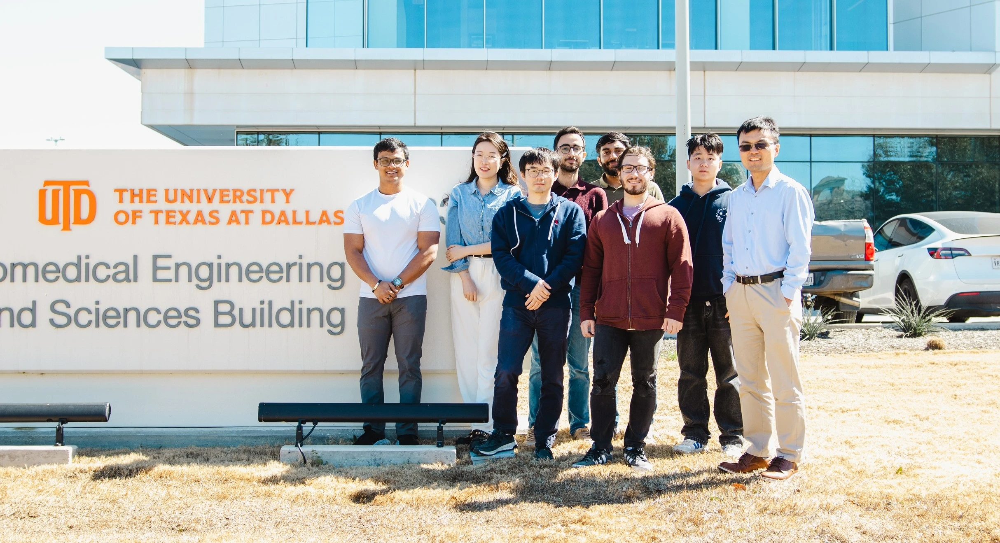
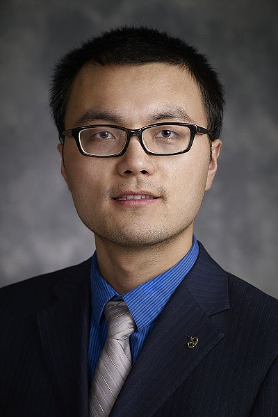
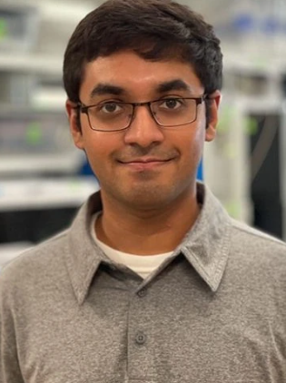
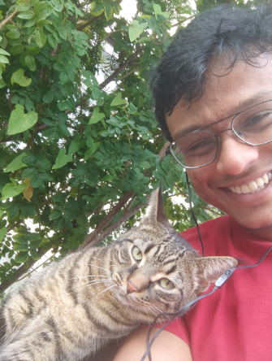
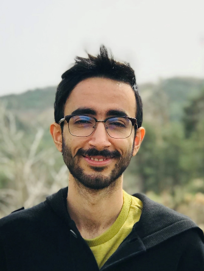

Biotransport &
brain research
Understanding transport processes relevant to the brain and developing tools for optical protein manipulation and molecular uncaging.

Exploring how light, nanomaterials, and biological systems interact—to understand the brain and advance infectious disease diagnosis.
Explore our research ↗
Nanomics · The University of Texas at Dallas
Nanomics investigates fundamental biotransport processes in the brain and diagnostic systems. We develop nanotechnology-based approaches to better understand the brain and advance point-of-care infectious disease diagnosis.
Our work connects the physics of laser–nanoparticle interactions with the behavior of biological molecules, translating fundamental insights into new experimental tools and diagnostic methods.
Understanding transport processes relevant to the brain and developing tools for optical protein manipulation and molecular uncaging.
Investigating how laser-driven nanoparticle heating affects proteins and lipids immediately adjacent to the nanoparticle surface.
Developing nanotechnology-based diagnostic approaches informed by fundamental studies of transport and nanoscale interactions.
Study how laser light and plasmonic nanoparticles interact at the boundary between nanomaterials and biological systems.
Develop experimental techniques to investigate the effects of local nanoparticle heating on nearby proteins and lipids.
Translate those insights into optical manipulation, molecular uncaging, and innovative diagnostic methods.
Bringing questions in brain research and infectious disease diagnosis to the interface of light, nanomaterials, and biology.

PRINCIPAL INVESTIGATORThe University of Texas at Dallas
Research in biotransport, laser–plasmonic nanoparticle interactions, and nanotechnology-based approaches for brain research and diagnostic systems.
Research Scientist
Research Scientist

Research Scientist
PhD Student, Biomedical Engineering

PhD Student, Bioengineering

PhD Student, Mechanical Engineering
PhD Student, Mechanical Engineering
PhD Student, Biomedical Engineering
PhD Student, Biomedical Engineering
Undergraduate Student